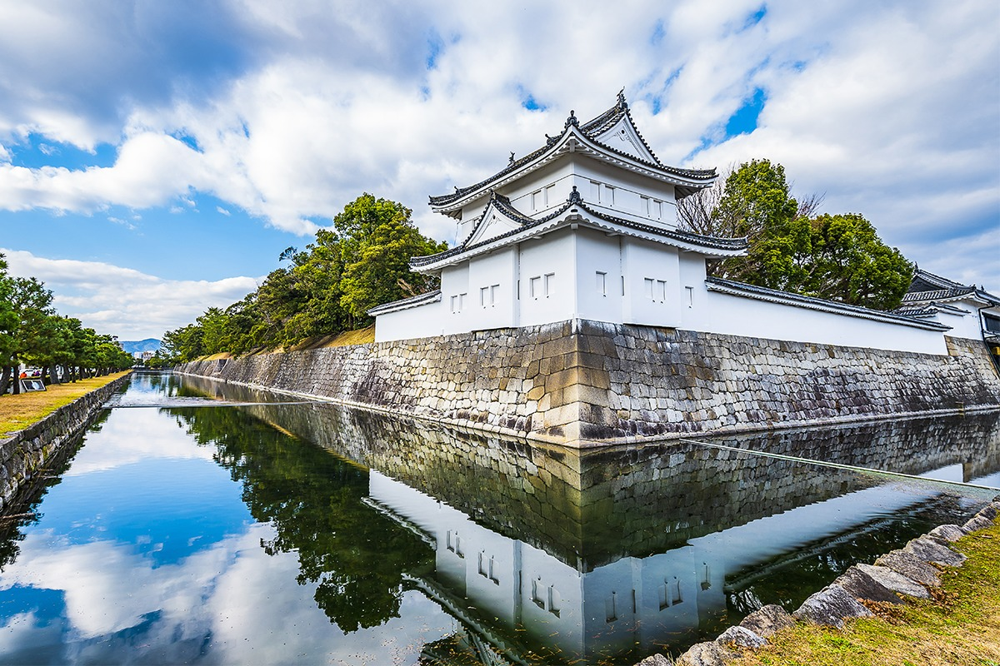
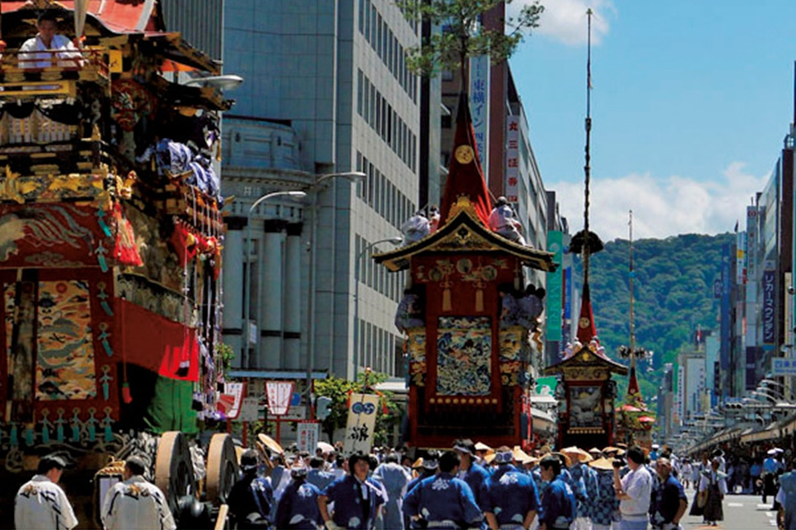
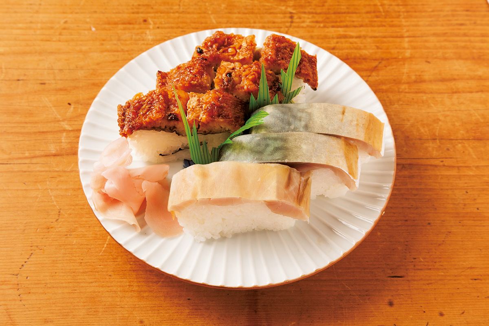
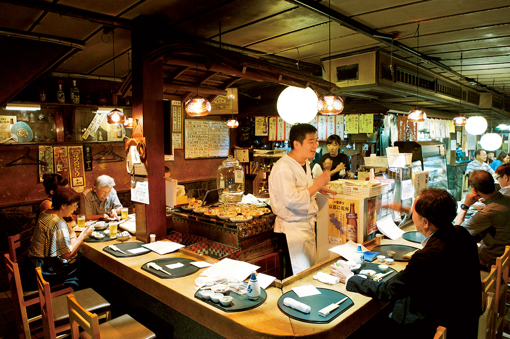
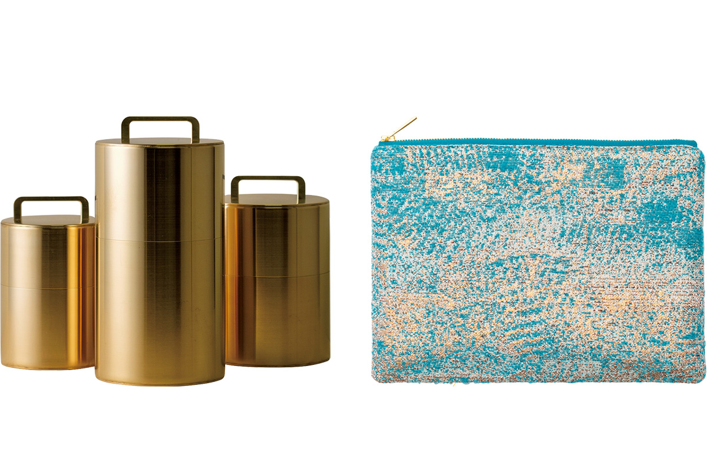
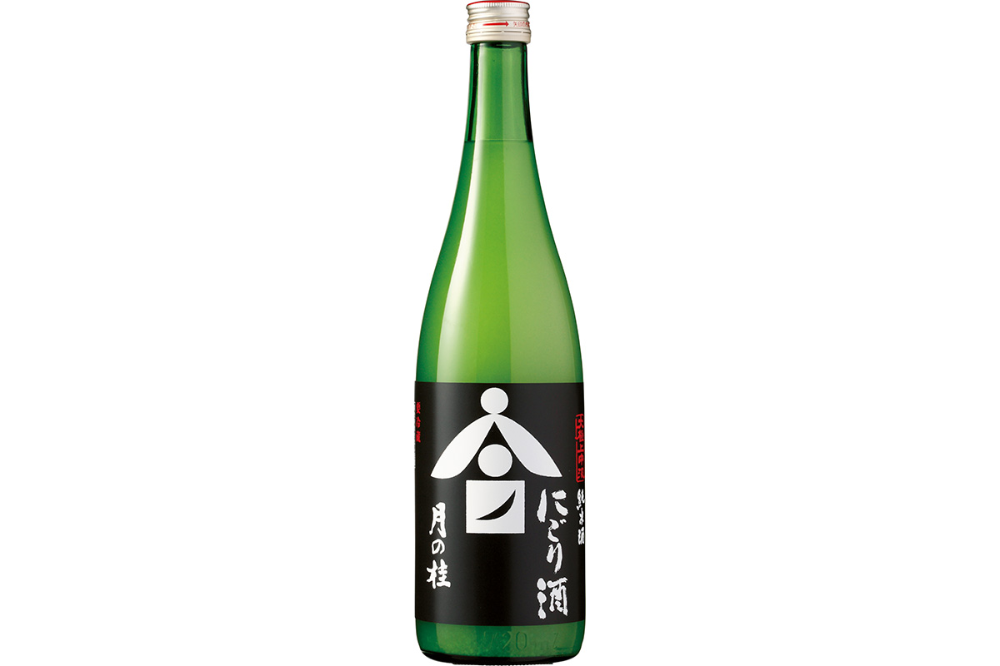
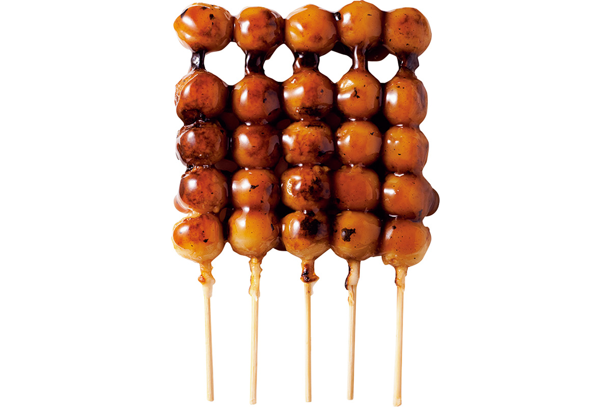
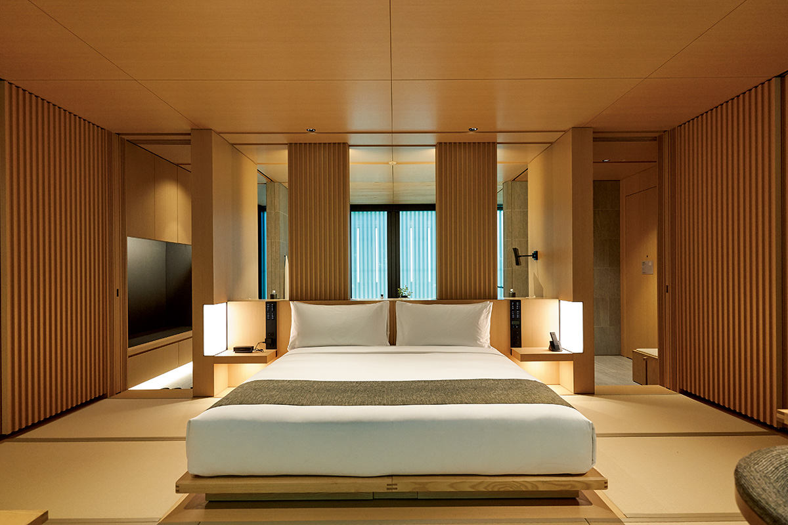

Префектура Киото
Киото: тысяча лет столицы, ужин в старом доме и ночь в лесу

Белый замок с изогнутыми крышами стоит за рвом, его стены и облака видны в спокойной воде.
Больше тысячи лет этот город был столицей, а теперь сюда приходят первые в стране люксовые отели. Рассказываем, что смотреть в Киото и что попробовать: от саба-суши до мутного сакэ из Киото.
Карта: 229 мест из 63 статей · все статьи о префектуре Киото
Карта
Киото на карте
229 мест из наших статей о префектуре Киото: Фусими Инари и Арасияма, замок Нидзё и дворец Госё, Удзи и чай, Охара, отели и рётэи, кафе и сладости, бани сэнто, «Киото у моря» (Аманохасидатэ, Инэ, Танго), Мияма и юг префектуры. Нажмите на точку, чтобы открыть статью.
Пунктирный круг означает, что точка примерная: место находится в этом районе или на этом острове.
О префектуре
Тысяча лет столицы и два разных севера с югом
Префектуру образуют старые области Танго, часть Тамбы и Ямасиро. Она вытянута с севера на юг: на севере выходит к Японскому морю, где лежат залив Майдзуру с изрезанным берегом и Аманохасидатэ, один из трёх знаменитых видов страны.
Юг занят тем Киото, который знают все: объекты всемирного наследия, старые кварталы и храмы, где каждая постройка имеет свой возраст и своё имя. Север и юг показывают совершенно разные лица, и на поездку стоит закладывать оба.
В 794 году столицу перенесли в Хэйан-кё, и до 1869 года, когда император переехал в Токио, город оставался центром страны больше тысячи лет. В последние годы здесь один за другим открываются люксовые отели, жильё, где путешественник попадает в повседневность Киото, и торговые комплексы. Герб префектуры решён в виде шестилепесткового знака с иероглифом «Кё» в центре.
Что посмотреть
Дворец, где жили императоры
Киотский императорский дворец
Дворец занимает центральную и северную часть Киотского императорского парка. Это прежняя резиденция императоров, и здесь собраны постройки, по которым читают историю города: зал Сисин-дэн, где проходили восхождения на престол, зал Сэйрё-дэн и малый дворец Огосё.
- Справки
- отдел осмотра управления императорского двора в Киото
- Адрес
- 3 Kyoto Gyoen, Kamigyo-ku, Kyoto
- Телефон
- +81 75-211-1215
Что ещё посмотреть
- Арасияма, бамбуковая роща и мост через реку
- Храм Киёмидзу, деревянная галерея над склоном
- Замок Нидзё, дворец и сад в центре города
Праздники
Месяц процессий с повозками
Гион-мацури
Этот праздник длится почти весь июль и состоит из череды обрядов, но главное в нём, конечно, шествие повозок: каждая улица выводит свою, украшенную резьбой, тканями и фигурами. Смотреть на это собираются целыми кварталами, а самые старые повозки хранят как реликвии.

- Период
- ежегодно в июле
- Место
- город Киото, святилище Ясака и улицы вокруг
Другие праздники
- Аой-мацури, весеннее шествие в старинных костюмах
- Огни на пяти горах, летнее зажжение огней на склонах
- Дзидай-мацури, осенняя процессия в одежде разных эпох
Музеи и архитектура
Замок, видевший две эпохи
Замок Нидзё
Замок пережил и возвышение, и падение дома Токугава, династии сёгунов, которая правила Японией с 1603 по 1868 год. Дворец Ниномару с залом для приёмов, сад Ниномару и резные ворота Карамон сохранили культуру Момояма во всей её пышности, и именно ради этих интерьеров сюда идут в первую очередь.
- Адрес
- 541 Nijojo-cho, Nakagyo-ku, Kyoto
- Телефон
- +81 75-841-0096
Что ещё посмотреть
- Национальный музей современного искусства, искусство XX века у канала
- Кинкакудзи, золотой павильон над прудом
- Святилище Хэйан, широкий двор и ворота с арками
Местная кухня
Скумбрия под водорослью
Саба-суши
Скумбрию солят, потом маринуют в уксусе и кладут на рисовую основу, а сверху накрывают тонким листом водоросли комбу. Блюдо придумали, чтобы рыба дольше хранилась, и раньше для него брали скумбрию, которую привозили в город по старой дороге.

Что ещё попробовать
- Тиримэн-сандзё, мелкая сушёная рыба с перцем
- Чайная соба, лапша с зелёным чаем
- Сиба-дзукэ, солёные овощи по-киотски
Где поесть
Идзакая, открытая с тридцать четвёртого
Идзакая «Синмэ»
Заведение работает с 1934 года и каждый день берёт продукты на рынке, поэтому меню меняется вместе с рынком. К еде подают собственное сакэ: смесь шести сортов, которую здесь составили для себя.

- Адрес
- 38 Tamaya-cho, Senbon-dori Nakadachiuri, Kamigyo-ku, Kyoto
- Телефон
- +81 75-461-3635
- Часы
- с 17:00 до 21:30
- Выходные
- воскресенье
- Сайт
- shinme-kyoto.jp
Ремёсла
Проект для старого ремесла
Проект «Гоу он»
Это совместная работа старого текстильного дома и мастерской Кайкадо: они ищут новые возможности для традиционного ремесла и заказывают мастерам вещи, которых в обычном наборе не бывает. Часть изделий делают по старым формам, часть по новым чертежам.

- Сайт
- hosoo.co.jp
- Сайт Кайкадо
- kaikado.jp
Что привезти
Сакэ, мутное как молоко
Сакэ «Цуки-но-кацура»
Это мутное сакэ с фруктовым ароматом и свежей кислинкой: рис здесь полируют, но не фильтруют напиток до прозрачности, поэтому во вкусе остаётся мягкость. Бутылка 720 миллилитров стоит 1870 иен.

- Телефон
- 0120-333-632
Данго «Камо-митараси»
Пять колобков на одной бамбуковой шпажке обжаривают и поливают сладким соусом, а форму им придают по образцу пузырьков, которые бьют из дна пруда Митараси у святилища Симогамо. Набор из пяти шпажек на вынос стоит 650 иен.

- Телефон
- +81 75-791-1652
Где остановиться
Двадцать шесть комнат в лесу
Аман Киото
Гостиница открылась в 2019 году и заняла обширный участок среди леса: корпуса с номерами спрятаны в деревьях, поэтому город остаётся где-то далеко за склоном. Здесь же устроены горячие ванны с водой собственного источника.

- Адрес
- 1 Okitayama Washimine-cho, Kita-ku, Kyoto
- Телефон
- +81 75-496-1333
- Комнат
- 26
- Цена
- от 118 000 иен за номер с завтраком, налоги не включены, банный сбор отдельно
Местный диалект
Как здесь говорят «очень вкусно»
- эрай ойсиосуэочень вкусно
- хоккори сита вастало спокойно на душе
- вараэтэ нани мо дэкихинсмеюсь и ничего не могу делать
- ё: фурахаримасу наачасто идёт дождь
Рекорды
В чём Киото первый
- №1 число построек, отнесённых к важным культурным ценностям: первое место
- №1 число живописных мест: первое место
- №1 высота деревянной постройки: пятиярусная пагода храма Тодзи
Вопросы и ответы
Что ещё спрашивают о Киото
В чём разница между «Ойдэясу» и «Окосиясу»?
Смысл у обоих один: добро пожаловать. Но говорят их по-разному в зависимости от гостя: «оидэясу» бросают прохожему или случайному посетителю, а «окосиясу» адресуют тем, кого ждали, постоянным гостям и тем, кто пришёл по записи.
Для чего построили Киотский императорский дворец?
Для жилья императора. Когда в 794 году столицу перенесли в Хэйан-кё, внутри дворцового комплекса поставили внутренние покои дайри, и с них всё началось. Покои горели и отстраивались заново, а своё нынешнее место дворец занимает с 1331 года.
Справочник
Киото в цифрах
Общие сведения
| Административный центр | Киото |
| Муниципалитеты | 15 городов, 10 посёлков, 1 село |
| Площадь | 4612 кв. км |
| Население | 2,59 млн человек |
| Плотность населения | 561,8 человека на кв. км |
| Туристов в год | 85,05 млн |
| Дерево префектуры | криптомерия с гор Китаяма |
| Цветок префектуры | плакучая сакура |
| Птица префектуры | серый буревестник |
Климат
| Средняя температура | +16,9 |
| Максимум | +35,0 |
| Минимум | +0,4 |
| Осадки | 1770 мм |
| Ясных дней | 21 |
| Дождливых дней | 107 |
| Снежных дней | 24 |
Для путешественника
| Онсэнов | 41 |
| Гостиниц и рёканов | 921 |
| Музеев искусств | 41 |
| Музеев | 41 |
| Митиноэки, придорожных станций | 19 |
| Национальное сокровище | главный зал храма Киёмидзу, дворец Ниномару замка Нидзё и другие |
| Важных культурных ценностей | 2188, из них 234 национальных сокровища |
| Исторических мест | 24 |
| Живописных мест | 20 |
| Природных памятников | 16 |
| Всемирное наследие | культурное наследие старого Киото |
| Национальные парки | Санъин-Кайган, залив Вакаса и другие, всего 8 |
Природные памятники
- Кристаллы в Хиэда, редкая порода с крупными кристаллами
- Сосна «Юрю-мацу», старое дерево в саду храма
- Девятиярусная вишня храма Дзёсё-кокудзи, дерево с ярусами цветов
- Ирисы Ота-но-сава, заросли ириса у реки
- Берег Кото-хики, песок, который скрипит под ногами
Наши статьи
Все статьи о префектуре Киото
Фусими и юг города
- Фусими Инари-тайся и Фусими: тысячи тории, гора богов и благоуханная вода
- Ужин над рекой Камо: четыре века летних веранд юка и пять мест, где за них стоит сесть
- Храм Тодзи: мандала Кукая в 21 статуе и пятиярусная пагода у вокзала Киото
- Momoyama Onsen Tsukimikan: старый рёкан Фусими стал отелем с горячим источником, буддами и баром
- Как ходить в киотский рётэй: кухня, посуда, обслуживание и сезон в каждой детали
Арасияма и Сага
- Арасияма и Сагано осенью: клёны императоров и храм «Повести о Гэндзи»
- Храм Дайкаку-дзи в Сагано: пруд императора Сага, икэбана и сутра, которую открывают раз в 60 лет
- HOSHINOYA Kyoto: на лодке в старую усадьбу над рекой в Арасияме
- HOSHINOYA Kyoto: эскарго, пидан и стихи вака в отеле на реке Ои в Арасияме
- Храм Кодзан-дзи: зайцы и лягушки «Тёдзю-гига», первый чай Японии и сад во мху
- Императорская вилла Кацура: павильоны для луны и дизайн, который не стареет
- ROKU KYOTO: курорт Hilton у трёх гор Такагаминэ, на месте старой деревни художников
Центр, дворец и Нидзё
- Шесть улиц старого Киото: храмы Тэрамати, рынок Нисики, Сидзё, Годзё, Понтотё и Симмати
- Замок Нидзё: где сёгуны принимали императора и где закончилась их эпоха
- Императорский дворец Киото Госё: тронный зал, кабинет и покои, куда не пускали мужчин
- Киото Гэйхинкан: дом, где Япония принимает королей и президентов
- HOSOO: как ткацкий дом Нисидзина с 1688 года вывел старинную парчу на мировые подиумы
- HOTEL THE MITSUI KYOTO: отель на месте усадьбы рода Мицуи напротив замка Нидзё
- Ace Hotel Kyoto и бар K36: телефонная станция 1926 года, школа на Хигасияме и новые места Киото
- Два отеля Mitsui Garden в Киото: сады у улицы Сандзё и отель вместе с храмом
- Kyoto Brighton Hotel: жить у дворца Госё, как живут киотосцы, и ездить в храмы с монахами
- Что любил императорский двор: сладость, комбу, веер и благовония из старых лавок Киото
Гион и Хигасияма
- Hotel The Celestine Kyoto Gion: чай, сады и тэмпура у ворот храма Кэннин-дзи
- Храм Рёсоку-ин в Киото: монах Торё Ито о медитации, которую можно взять с собой домой
- Святилища «Повести о Гэндзи»: олени Охарано, сады Дзёнангу и ночной праздник Ивасимидзу
- Дом Кандзиро Каваи: где в Киото начиналось движение мингэй
- Park Hyatt Kyoto: отель на холме Хигасияма, который поселился в саду старого рётэй
- Banyan Tree Higashiyama Kyoto: онсэн, спа и сцена театра но на холме над Киото
- THE SHINMONZEN: девять номеров Тадао Андо на улице антикваров в Гионе
- THE GATE HOTEL Kyoto Takasegawa by HULIC: ночь в старой школе у реки Такасэ
- Chourakukan: особняк «табачного короля» эпохи Мэйдзи, где сегодня можно переночевать
Окадзаки и север
- Сады Киото осенью: дом Мирэя Сигэмори, Мурин-ан, Хакурюэн и редкие показы в храмах
- Север Киото без толпы: от святилища Камигамо до тихих храмов Нисигамо
- Чайная Тайан и места чайной истории Киото: по следам Сэн-но Рикю
- Музей традиционных ремёсел Киото: 74 ремесла города под одной крышей
- Kyoto City KYOCERA Museum of Art: старейшее здание музея в Японии после перестройки
- Aman Kyoto: курорт в лесу, который сорок лет растил ткач из Нисидзина
- Fufu Kyoto: тихий курорт у храма Нандзэн-дзи, где вода канала течёт через сад и номера
- Рётэй Rokusei: ужин в духе хэйанского двора, придуманный по старинным свиткам
- Somenotsukasa Yoshioka: как в Киото возвращают яркие цвета эпохи Хэйан
Вокзал и отели
Еда, кафе и сладости
- Kinobu: киотский рётэй, где кайсэки подают к вину, а акулий плавник к кунжутному тофу
- Tankuma Kitamise: урок тя-кайсэки, чайной трапезы, с которой начался кайсэки
- Кофе в старых стенах: семь кафе и ресторанов Киото в зданиях 1900–1930-х годов
- Выпить днём в Киото: семь заведений, которые открываются задолго до вечера
- Завтрак в Киото: рис из глиняного котелка, суши как сладости, удон с пяти утра и карри у замка
- Что увезти из Киото: десять угощений, которые продают только в городе
- Сладости Киото с пряностями: шесть старых лавок, где в сладкое кладут перец и корицу
- Чай в Киото: кайсэки с чаем Ippodo Tea, заварка дома и лавка «Рюоэн», где маття мелют за прилавком
- Kaikado: чайницы из Киото, которые закрываются сами
Удзи и Охара
«Киото у моря»
- Chitose у Аманохасидатэ: обэрж с погребом на 50 000 бутылок и своей винодельней
- Вкус «Киото у моря»: краб тайдза-гани, устрицы и семь ресторанов Танго
- Iio Jozo: рисовый уксус, который два года зреет на севере Киото
- Коно-дзиндзя и Инэ: от родины богини еды к красному сакэ и суши у воды
- «Киото у моря» зимой: каштаны, шёлк, глициниевая ткань и девять мест на севере префектуры